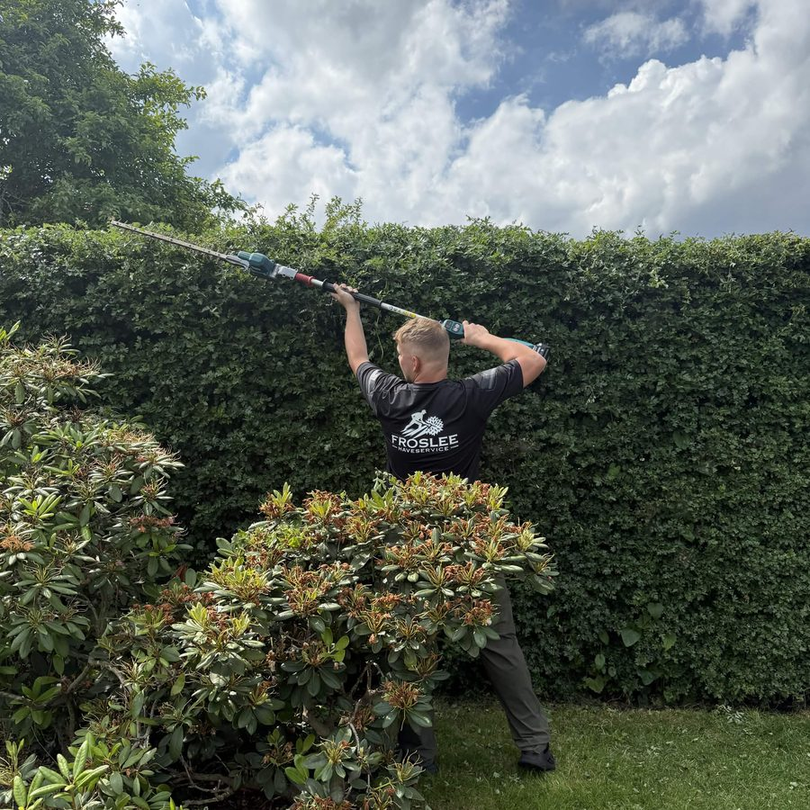
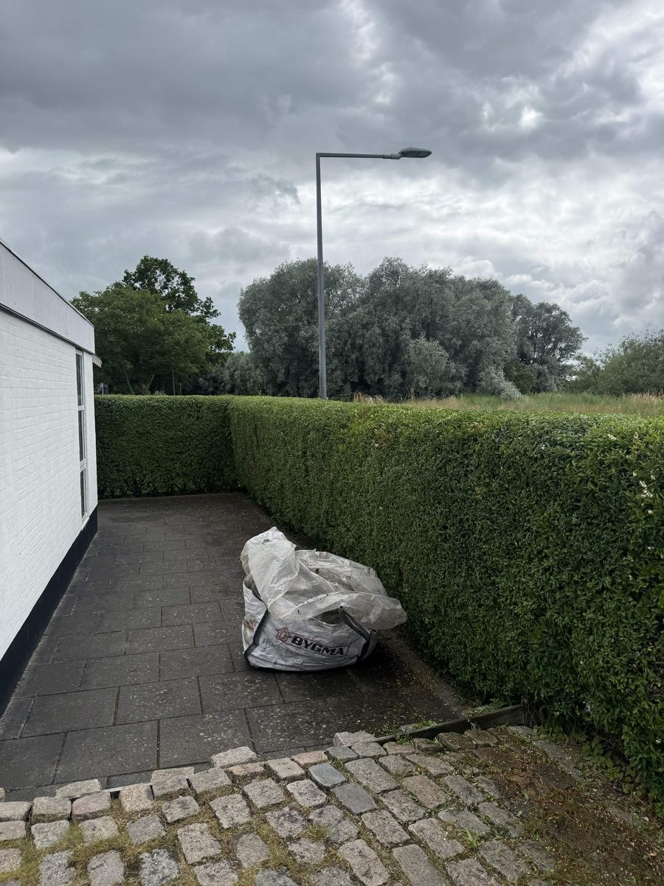

Den, du ringer til, er den, der klipper
Froslee Haveservice er Tobias Froslee. Han startede firmaet i Klarup, tager selv telefonen og står selv i din have. Ingen mellemled, ingen skiftende hold.

Historien
Tobias begyndte med at klippe hække for naboer i Klarup. Det blev til flere, fordi hækkene stod lige, og haven var ryddet, når han kørte. I dag er det et firma med over 100 klippede hække i Aalborg og omegn.
Vi hjælper private, virksomheder og boligforeninger. Opgaverne spænder fra en enkelt bøgehæk ved parcelhuset til lange ligusterhække omkring en boligforening. Det, der er ens, er måden: snor i begge ender, skarp sakse, og vi går ikke, før afklippet er samlet.
Vi er bevidst et lille firma. Det betyder, at du får en fast pris, inden vi starter, og at du kan ringe til den samme person før, under og efter. Det er den måde, vi selv gerne vil behandles på.


Sådan arbejder vi
Vi klipper efter snor
En stram snor i begge ender giver en lige top og lige sider. Det er den gamle metode, og den virker stadig bedst.
Prisen er aftalt, før vi starter
Prisen følger prislisten pr. meter. Er hækken usædvanlig, får du en fast pris på forhånd, aldrig en overraskelse bagefter.
Haven er ryddet, når vi kører
Vi river sammen og samler afklippet i bunker, eller tager det med, hvis du har valgt bortkørsel. Du skal ikke gøre noget.
Vi kører til
Aalborg og cirka 25 km omkring. Bor du længere væk, så ring alligevel.
Skal vi kigge på din hæk?
Beregn prisen på under et minut, eller ring til Tobias direkte.